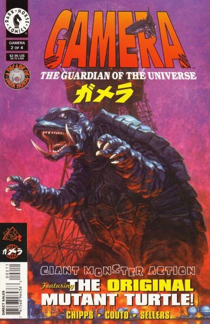
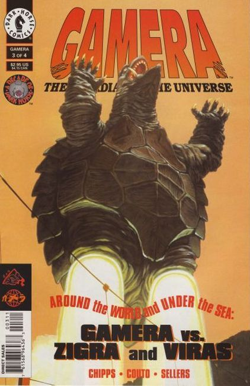
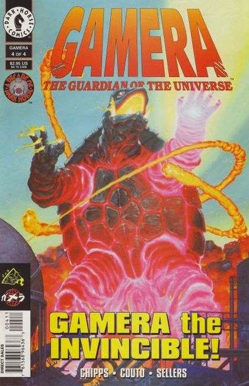

Gamera is a kaiju originating from a series of Japanese tokusatsu films of the same name. Gamera first appeared in Daiei Film's 1965 film Gamera, the Giant Monster, which was initially produced to rival the success of Toho's Godzilla; however, Gamera has gained fame and notoriety as a Japanese icon in his own right. The character has appeared in other media such as comic books and video games.
When giant monsters threaten to destroy your family, when natural disasters endanger your home, there's one big turtle who's watching your back! He's Gamera, the guardian of the universe, and he's returned to save Mexico from the awesome power of the bio-engineered bird-monster known as Gyaos! There's a battle of the behemoths brewing south of the border, and the repercussions are gonna be felt across North and South America!

Gamera's got his giant-turtle hands full dealing with the flying terror called Gyaos! But he'll have to free up a foot or two, 'cause a new player just entered the game: the alien shark creature Zigra! You have to expect days like this when you take on the title "Guardian of the Universe," and you have to be ready to come out fighting!

Dr. Greta Karbone has succeeded in creating her very own supermonster -- the giant squid-beast Viras. But Karbone learns that what you create you cannot always control, as Viras takes over the doctor's mind. It's all part of a monstrous plan to enslave humanity -- a plan that begins in Paris, where Viras must dispose of mankind's bio-engineered guardian Gamera, the giant flying turtle! The City of Lights is about to become a city in flames!

Gamera is supposed to be the Guardian of the Universe, not the protector of life-threatening monsters! So why is he helping a gigantic squid destroy all of Paris? Has the original mutant turtle taken a turn for the worse? Find out in the final issue of this four-issue miniseries! It's giant monster action as you demanded it!